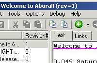
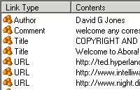
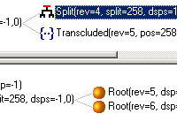

{kind=link}

{kind=link}

{kind=link}

The following page contains a series of screenshots from some of the sub-projects making up the Abora project.
The @link:dolphin_demo@ was developed during the Summer of 2002 to investigate a cheap reimplementation of a subset of the Udanax-Gold server and explorations into Xanadu UIs. The result is very rough, but starts to hint at some of the interesting features that come out of the basic design.
|  | Simple Text editor that allows inserts, deletes and simple transclusions, together with a list of known Works, and associated Editions/Revisions. The first line of the text is underlined to indicate it is part of a link, in this case a link of type Title. The title link is used to populate the names of the works seen in the top left Works pane. |
|
|
Comparison between the original edition of the work on the right, and the latest on the left. The colors highlight sections which are the same between the two editions. So the first green section indicates COPYRIGHT AND ... is the same. The Highlighting of David G Jones shows that it can be found in the same location in the left edition, but has also been transcluded/copied twice further down the edition. A standard documentation/versioning system such as CVS would not be able to connect together the copied David...s. Finally free of charge, and person and the section in capitals have been deleted in the new edition. |
|  | Simple listing of all links that are associated with the content included in the edition. |
|
|
List of all other works that share the same content as the current work. This can be for all the text of the current work or just its current selection. |
|  | Developer inspector to investigate Ent-like tree used to store the data for all editions of a Work. |
|
|
Developer statistics on the size and makeup of an Ent tree. |